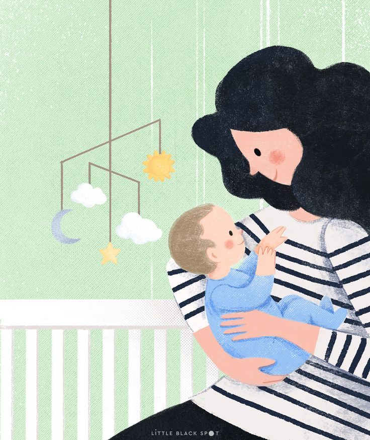

어린이 보호 구역의 표지판이다. 어린이 아래 그림을 보면 치마를 입은 여성과 아이가 손을 잡고 있다. 이때 부모님은 두 명인데 왜 한 명만을 그린 것일까? 에 대한 의문이 들었다. 이뿐만 아니라 아버지가 아이와 함께 신호를 건널 수 있는 상황이 있다. 보통 여성이 많이 육아한다는 이유로 디자인된 간판이 과연 맞는가에 대한 의문이 들었다.

정치적 관점
과거에는 여성이 집안일과 육아를 맡아서 하는 것이 당연히 여겨지는 시대가 있었다. 여성이 집안 일을 하면 남성이 바깥일을 하는 것이다. 하지만 현재는 많은 여성들이 사회에서 일을 하고 있다. 오히려 위 상황과 반대로 여겨지는 일이 많이 발생한다. 하지만 과거의 고정관념 때문에 위의 간판이 탄생하게 되었다.
나의 생각
사회가 만든 고정관념으로 인하여 탄생한 디자인이라고 생각한다. 이뿐만 아니라 여러 부분에서 이러한 디자인이 나타난다. 사람한테 한번 박힌 인식을 바꾸는 것은 정말 힘든 일이다. 그 때문에 우리가 이미 인식하고 있는 고정관념에서 비롯된 디자인을 바꾸는 것은 큰 노력이 필요할 것이다.